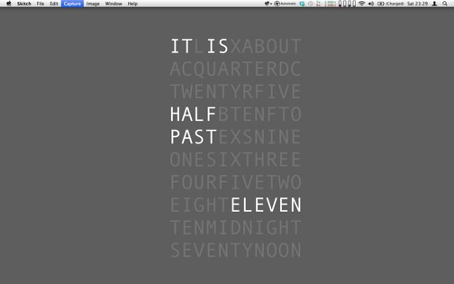
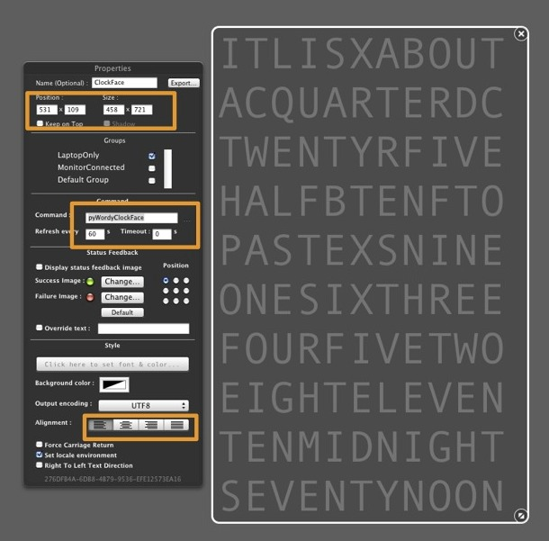
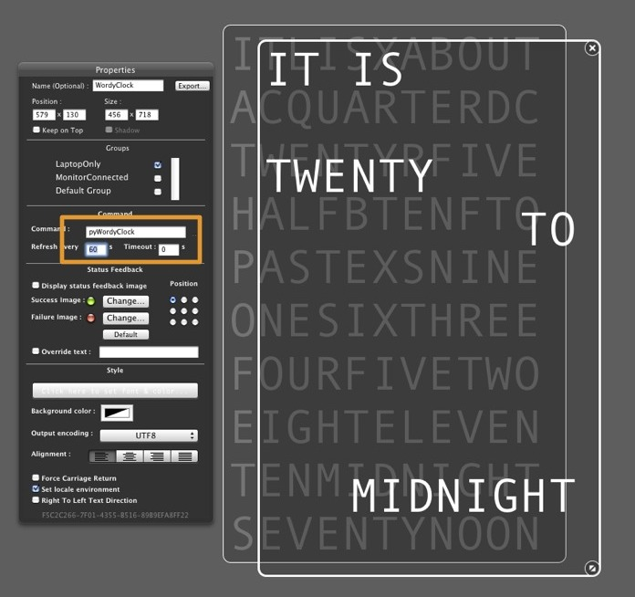
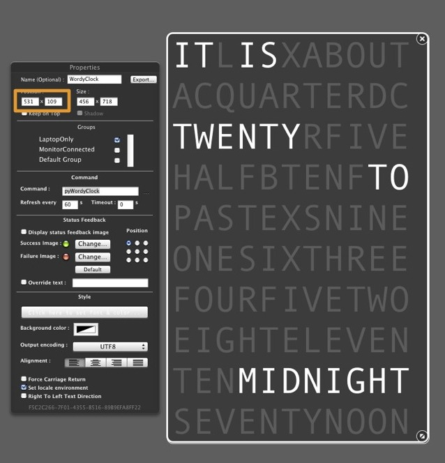

pyWordyClock is a simple command line script that outputs an artsy, approximate, multiline clock.
It works pretty well with "text on desktop apps" like:
- GeekTool 3 on Mac OS X
- Conky on Linux
- .. and maybe Rainmeter on Windows (sorry, I haven't got a Windows box to test this)
Mac OS X instructions
You will need:
- GeekTool3
- Python (which comes standard on Mac OS X
Download pyWordyClock
You can download this project in either
zip or
tar formats.
You can also clone the project with Git
by running:
$ git clone git://github.com/kenlim/pyWordyClock
Install pyWordyClock
Create a clock face widget in GeekTool3
Use GeekTool3 to create the background "Clock Face" widget:
- Create a new "Shell Widget".
- Set the "Command" to "pyWordyClockFace"
- Let it refresh every 60 seconds (it is approximate, after all)
- Set the font to something big, but with "Fixed Width", like "Andale Mono"
- Make sure that the text is right justified.
- Make a note of the position

Create the clock widget in GeekTool3
Use GeekTool3 to create the clock widget itself:
- Create a new "Shell Widget".
- Duplicate all the settings from the Clock Face widget above
- Change the "Command" to "pyWordyClock"
- Set the font colour to be brighter than the Clock Face so that it will stand out.

Align the clock widget on top of the clock face widget
Use the same positioning data as the Clock Face Widget for the Clock, and it should align perfectly

... and you're done!